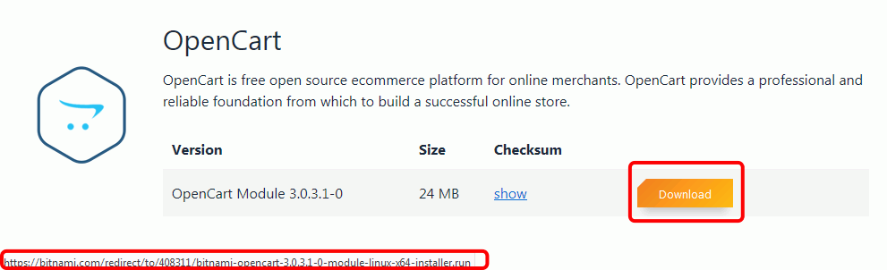

Bitnami (2) 3 - OpenCart
- Descargar y ejecutar el instalador de módulo
La página de instaladores de OpenCart de Bitnami es bitnami https://bitnami.com/stack/opencart/installers
Desplácese hasta el final de la página y haga clic en el enlace a la página de módulos de aplicación para Linux:

Poniendo el ratón encima del icono de descarga, puede ver la URL del archivo:

A continuación utilice el comando wget para descargar el instalador (muévase antes al directorio en que quiera realizar la descarga, por ejemplo /tmp):
cd /tmp wget https://bitnami.com/redirect/to/408311/bitnami-opencart-3.0.3.1-0-module-linux-x64-installer.runCambie los permisos del archivo y ejecute el instalador:
chmod +x ./bitnami-opencart-3.0.3.1-0-module-linux-x64-installer.run sudo .bitnami-opencart-3.0.3.1-0-module-linux-x64-installer.run - Instalar la aplicación
- Installation folder: /opt/bitnami.
- Admin account: admin (por ejemplo)
- La contraseña predeterminada de usuario root MySQL es la indicada en la pantalla inicial de la máquina virtual (o bitnami)
- Hostname: la IP de la máquina virtual
- Mail support: n
- Launch Module: Y
La contraseña predeterminada del usuario administrador de la aplicación será bitnami
- Apagar la máquina virtual
Puede apagar la máquina virtual con el comando poweroff o cerrando la ventana de VirtualBox:
sudo poweroff

{kind=link}
{kind=link}